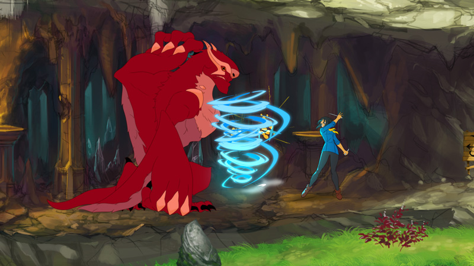

Em setembro de 2014, jogadores que costumam acessar o Kickstarter se uniram para financiar a produção de Battle Chef Brigade. Três anos se passaram desde então,e enfim temos a notícia de que o jogo já tem uma data de lançamento: 20 de novembro.
Desenvolvido para Switch e PC, Battle Chef Brigade pode ser considerado uma mistura de Monster Hunter 2D com Candy Crush. Aqui, sua missão é controlar a protagonista do game e guiá-la pelo cenário com o intuito de derrotar monstros variados para obter ingredientes. Estes, por sua vez, são utilizados em uma mecânica “match 3” para criar receitas variadas que devem ser aprovadas por chefs.
Confira o vídeo que está na sequência para ter uma ideia daquilo que Battle Chef Brigade reserva:
Vale mencionar que o game também havia sido anunciado para PlayStation 4, mas segue sem data definida para chegar a esta plataforma.